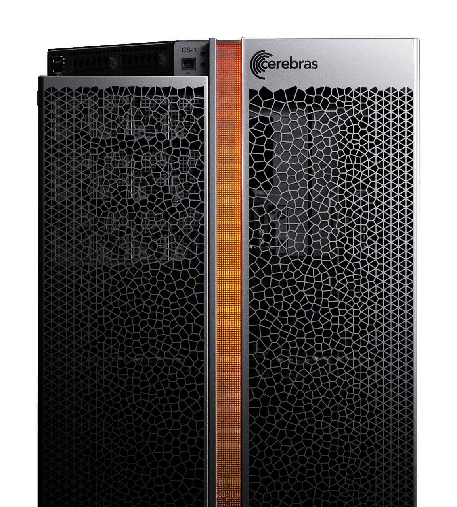

This project brings a Cerebras CS-1 Wafer Scale Engine system to the UK – the first such system in Europe. This enables performance and usability exploration for UK academic and industrial users. The majority of the system has been funded by the University of Edinburgh, however the support from ExCALIBUR HE&S has allowed for a more general access service to be provided to researchers from across ExCALIBUR and the wider computational science and AI community in the UK.
Cerebras Systems have developed the world’s largest processor, the Wafer Scale Engine (WSE), at over 46,000 square millimetres, with 1.2 trillion transistors, 400,000 processor cores, 18 gigabytes of SRAM, and an interconnect between processors capable of moving 100 million billion bits per second. With the WSE at its core, the Cerebras CS-1 system is firmly focussed on neural network training and according to Cerebras the CS-1 provides 3000x more capacity and 10,000x greater bandwidth than the leading competitor.

From a software perspective, Cerebras Systems have integrated their hardware into common machine learning frameworks such as TensorFlow and PyTorch2, opening up the potential for easy porting of existing application to the system. They also provide a graph compiler (CGC) and optimised library kernels, to efficiently map applications to the many processors on the WSE and ensure optimal use of the resource.
With potential for extreme performance for a wide range of machine learning training tasks, the Cerebras CS-1 is a very exciting new technology. However, there is currently a lack of user experience and application performance data to assess the suitability of the hardware for actual applications, and the requirements/costs for porting codes to the system. With a software environment that partially resembles standard CPU- and GPU-based systems, and partially resembles FPGA-based systems, with associated placement and routing requirements, it is important to be able evaluate both performance and usability of the CS-1 for end user applications. Such end user applications may also include more traditional numerical applications and this will be an area of exploration on the system.
Access to the testbed systems
The Excalibur H&ES testbeds are prioritised for access by ExCALIBUR projects, but also available for use by the wider UK research community - contact the ExCALIBUR H&ES programme office to discuss your requirements. Please note that the testbeds are offered on a best efforts basis rather than a service footing, as befits their experimental status.